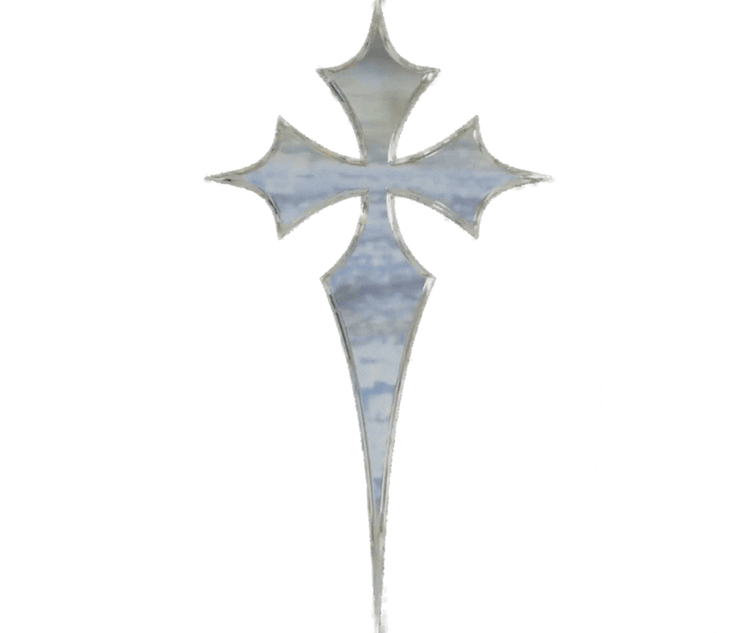

Hello my name is Emmanuel R.
As a 16-year-old high school junior,I am currently balancing my 11th-grade studies with my passion for web development.
I would consider myself as a modest artist who can do simple designs on paper, also being better at designing things on websites such as:

Beyond my technical coding skills, I am a highly proficient photo editor with a meticulous eye for visual aesthetics. Far from just applying basic filters,
intuitively identifying exactly what a photo needs to elevate its mood and impact. By carefully manipulating lighting dynamics, balancing color contrast executing precise, high-end touch-ups, I ensure that every image I work on is polished, captivating, and distinctly.To see more about my personal life and my work, you can click on the links below to see more about me and my work.